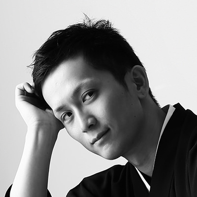

About
이 스터디는 실무에서 자주 사용하는 기술 스택(React, Node.js, Express, MongoDB)을 처음부터 끝까지 직접 만들어 보며 배우는 것을 목표로 합니다. 매주 이론 학습과 실습을 병행하고, 마지막 주에는 각자 완성한 프로젝트를 발표하는 데모데이를 진행합니다.

2026.09.01 ~ 2026.10.27 매주 화요일 19:00 ~ 21:00
프론트엔드부터 백엔드, 베포까지 한 번에 경험하는 8주 완성 풀스텍 개발 스터디입니다. 혼자서는 끝까지 완주하기 어려웠던 사이트 프로젝트, 이번엔 함꼐 끝까지 만들어 봅시다.
이 스터디는 실무에서 자주 사용하는 기술 스택(React, Node.js, Express, MongoDB)을 처음부터 끝까지 직접 만들어 보며 배우는 것을 목표로 합니다. 매주 이론 학습과 실습을 병행하고, 마지막 주에는 각자 완성한 프로젝트를 발표하는 데모데이를 진행합니다.
| 1주차 | HTML / CSS 기초 다지기 |
| 2주차 | JavaSCript 핵심 문법 정리 |
| 3주차 | React로 프론트엔드 화면 만들기 |
| 4주차 | Node.js & Express로 서버 만들기 |
| 5주차 | MongoDB로 데이터베이스 다루기 |
| 6주차 | 프론트엔드 - 백엔드 API 연동하기 |
| 7주차 | 배포하기 (Vercel / Render) |
| 8주차 | 최종 프로젝트 발표회(데모데이) |
3년 차 프론트엔드 개발자로, React와 사용자 경험(UX)에 관심이 많습니다. 처음 코딩을 시작했을 때의 막막함을 잘 알기에, 눈높이에 맞춘 설명을 목표로 스터디를 운영하고 있습니다.

백엔드와 인프라를 주로 다루는 개발자입니다. 실제 서비스 운영 경험을 바탕으로 서버, 데이터베이스, 배포까지 실무에 가까운 흐름을 함께 만들어가고자 합니다.
